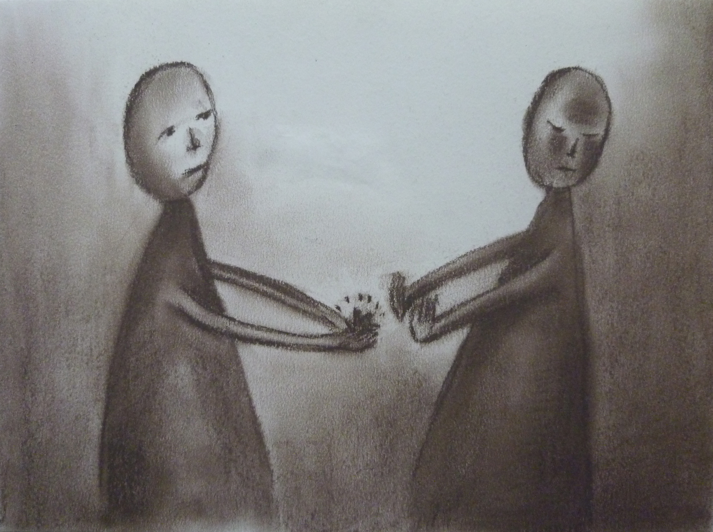
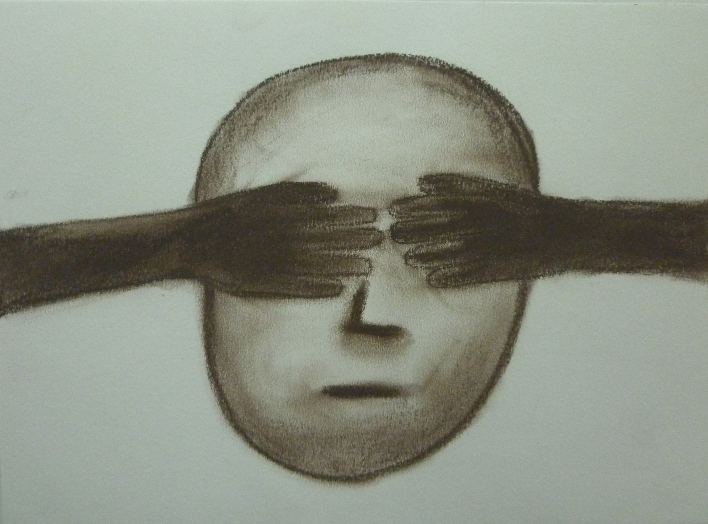

앙투안 마리 로제 드 생텍쥐페리의 책 『어린 왕자』 (원제: Le petit prince) 중 문장을 발췌하고 그 문장으로부터 비롯된 개인의 상상력과 경험들을 김보람이 드로잉하였다.
 <아무에게나 다 친구가 있는 것은 아니다.> 종이에 콘테 230x310
 <나는 더이상 무슨 말을 해야 좋을지 알 수 없었다. 나 자신이 너무나 서툴게만 느껴졌다.> 종이에 콘테 230x304